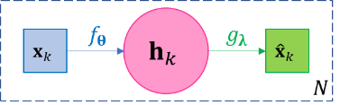
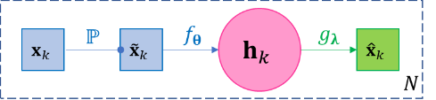

2. Basic Neural Networks¶
2.1. Recurrent Networks¶
This section introduces recurrent networks, another major category of neural networks that primarily deal with sequential data like time series and natural language texts. Again, our data \(\left( \mathbf{X},\mathbf{Y} \right)\) consist of the data vectors \(\mathbf{X} = \left( \mathbf{x}_{1},\mathbf{x}_{2},\ldots\mathbf{x}_{N} \right)\) and corresponding target vectors \(\mathbf{Y} = \left( \mathbf{y}_{1},\mathbf{y}_{2},\ldots,\mathbf{y}_{N} \right)\), and the objective is to find a neural network \(\mathcal{N}\) that approximately solves the regression problem \(\mathbf{y}_{1},\ldots,\mathbf{y}_{N}\mathcal{\approx N}\left( \mathbf{x}_{1},\mathbf{x}_{2},\ldots\mathbf{x}_{N} \right)\). Specially, when \(\mathbf{y}_{1},\ldots,\mathbf{y}_{N}\) are categorical scalars, we have a classification problem. As mentioned before, a neural network \(\mathcal{N}\) is a function derived from a complicated composition of elementary functions.
We say \(\left( \mathbf{X},\mathbf{Y} \right)\) is sequential data if we assume \(\mathbf{y}_{t}\) is dependent only on the present and the past, i.e. assuming there exists underlying functions \(𝒻_{t}\) s.t. \(\mathbf{y}_{t} = 𝒻_{t}\left( \mathbf{x}_{1},\ldots,\mathbf{x}_{t} \right),t = 1,\ldots,N\). A recurrent network, denoted by \(\mathcal{R}\), aims at approximating \(\mathcal{R \approx}\left( 𝒻_{1},\ldots,𝒻_{N} \right)\) by the following recursive compositions
where 1) the intermediate variables \(\mathbf{h}_{1},\mathbf{h}_{2},\ldots,\mathbf{h}_{N}\) are called hidden states or collectively called the hidden layer, and the derivation of \(\mathbf{h}_{t + 1}\) from \(\mathbf{h}_{t}\) is called hidden state transition; since \(\mathbf{h}_{t}\) is recursively dependent on \(\mathbf{h}_{\mathbf{t - 1}}\) and \(\mathbf{x}_{t}\), then clearly \(\mathbf{h}_{t}\) is only dependent on \(\mathbf{x}_{1},\ldots,\mathbf{x}_{t}\), the past and the present; 2) \({\widehat{\mathbf{y}}}_{1},\ldots,{\widehat{\mathbf{y}}}_{N}\) are called the regressed target values or collective called the output layer, which we hope to be good approximation of \(\mathbf{y}_{1},\ldots,\mathbf{y}_{N}\); 3) \(f\left( \mathbf{h},\mathbf{x};𛉠\right)\) and \(g\left( \mathbf{h};𛌠\right)\) are two function families and we can see \(\colorbox{result}{$g\left( \mathbf{h}_{t};𝛌_{t} \right)$ is only dependent on the past and the present data $\mathbf{x}_{1},\ldots,\mathbf{x}_{t}$}\) since \(\mathbf{h}_{t}\) is only dependent on them, so function \(g \left( \mathbf{h};𝛌_{t} \right)\) is our approximation of the underlying true function \(𝒻_{t}\); 4) \(𝛉_{t},𝛌_{t},t = 1,2,\ldots\) are parameters to be inferred through optimization together with estimation of \(\mathbf{h}_{t},{\widehat{\mathbf{y}}}_{t},t = 1,2,\ldots\) The model scheme in Eq.2.1 specifies the general architecture of RNN, and hence we also refer to it specifically as the general recurrent network The plate diagram of model represented by Eq.2.1 is shown in .
\(\Leftrightarrow\) | ||
| (a) | (b) |
{kind=link}
{kind=link}
Figure 3-1 The plate diagram of the recurrent network. (a) the unfolded diagram, with back propagation direction illustrated; (b) the folded diagram.
For Eq.2.1, note very often we may use time-homogenous parameters, i.e. letting \(𝛉_{t} \equiv 𝛉_{1}\) and/or \(𝛌_{t} \equiv 𝛌_{1}\) to reduce model complexity. Also note the dimensions of different variables in the network: a data vector \(\mathbf{x}\), a hidden state vector \(\mathbf{h}\) and a target vector \(\mathbf{y}\) may have different dimensions; even a regressed vector \({\widehat{\mathbf{y}}}_{t}\) and its corresponding target vector \(\mathbf{y}_{t}\) can have the different dimensions, as long as a proper differentiable loss function can be chosen for them, see the later example of Eq.2.12.
To optimize our neural network, we must choose a loss function \(ℓ\), which is a differentiable function dependent on the regressed values \(\widehat{\mathbf{y}}\) s and true target vectors \(\mathbf{y}\) s. For convenience, denote \(f_{𝛉}\left( \mathbf{h},\mathbf{x} \right) := f\left( \mathbf{h,x};𛉠\right)\) and \(g_{𝛌}\left( \mathbf{h} \right) := \left( \mathbf{h};𛌠\right)\). After \(ℓ\) is chosen, note again we need to adjust values for \({\widehat{\mathbf{y}}}_{t}\), \(𝛌_{t}\), \(\mathbf{h}_{t}\), \(𝛉_{t}\) through gradient-based optimization, the back propagation for Eq.2.1 is the following process of gradient calculation: 1) the gradients of output-layer unknowns \(\widehat{\mathbf{y}}\) s and parameters \(𝛌\) s,
and 2) the gradients of the hidden states \(\mathbf{h}_{t}\) and parameters \(𝛉_{t}\) for \(t = N,N - 1\) are
and then it is easy to see generally
If the parameters are time-homogeneous, i.e. \(𝛌_{t} \equiv 𝛌\) and \(𝛉_{t} \equiv 𝛉\), then Eq.2.2 and Eq.2.3 are replaced by
-
Model 3-1. LSTM with Single Forget Gate.¶
A well-known variant of RNN Eq.2.1 is the long short-term memory network (LSTM), whose essential idea is to introduce the vector-valued forget rate function or forget gate function or damping factor function \(σ_{𝛉^{\left( σ \right)}} = \left( σ_{1},\ldots,σ_{m}\ \right)_{𝛉^{\left( σ \right)}} \in \left\lbrack 0,1 \right\rbrack^{m}\) to the hidden states such as the following, where “\(\circ\)†denotes element-wise product,(2.5)¶\[\begin{split}\begin{aligned} \mathbf{h}_{1} &= σ\left( \mathbf{h}_{0},\mathbf{x}_{1};𝛉_{1}^{\left( σ \right)} \right) \circ f\left( \mathbf{h}_{0},\mathbf{x}_{1};𝛉_{1} \right),{\widehat{\mathbf{y}}}_{1} = g\left( \mathbf{h}_{1};𝛌_{1} \right) \\ \mathbf{h}_{2} &= σ\left( \mathbf{h}_{1},\mathbf{x}_{2};𝛉_{2}^{\left( σ \right)} \right) \circ f\left( \mathbf{h}_{1},\mathbf{x}_{2};𝛉_{2} \right),{\widehat{\mathbf{y}}}_{2} = g\left( \mathbf{h}_{2};𝛌_{2} \right) \\ \mathbf{h}_{3} &= σ\left( \mathbf{h}_{2},\mathbf{x}_{3};𝛉_{3}^{\left( σ \right)} \right) \circ f\left( \mathbf{h}_{2},\mathbf{x}_{3};𝛉_{3} \right),{\widehat{\mathbf{y}}}_{3} = g\left( \mathbf{h}_{3};𝛌_{3} \right) \\ \ldots \\ \mathbf{h}_{N} &= σ\left( \mathbf{h}_{N - 1},\mathbf{x}_{N};𝛉_{N}^{\left( σ \right)} \right) \circ f\left( \mathbf{h}_{N - 1},\mathbf{x}_{N};𝛉_{N} \right),{\widehat{\mathbf{y}}}_{N} = g\left( \mathbf{h}_{N};𝛌_{N} \right) \end{aligned}\end{split}\]We often call the forget gate function as simply a forget gate for simplicity and refer to the model represented by Eq.2.5 as the LSTM with single forget gate. It be viewed as a special design of the general form of RNN in Eq.2.1 by letting \(f\left( \mathbf{h}_{t - 1},\mathbf{x}_{t};𝛉_{t} \right) := σ\left( \mathbf{h}_{t - 1},\mathbf{x}_{t};𝛉_{t}^{\left( σ \right)} \right)f\left( \mathbf{h}_{t - 1},\mathbf{x}_{t};𝛉_{t} \right)\); or conversely you may also view RNN as a special case of the LSTM using constant \(σ_{𝛉^{\left( σ \right)}} \equiv 1\) as the forgetting rate. The philosophy behind LSTM is so that the effects of a hidden state \(\mathbf{h}_{t}\) should have a limited effect on a far-away future hidden states \(\mathbf{h}_{t + T},T \gg 0\) when more recent data are provided, or the network’s current state should gradually “forget†the far-away past and hence the “short-term†memory. This philosophy intuitively makes sense for many applications, e.g. today’s stock price is likely to be more dependent on this months’ historical prices, rather than last month’s price history. A concrete example of such “history forgetting†is in Eq.2.6 and Eq.2.8. The plate diagram of this general LSTM is given in Figure .
\(\Leftrightarrow\)
(a) (b) Figure 3-2 The unfolded and folded plate diagram of the LSTM with single forget gate. LSTM can be viewed as a special case of general RNN such that it defines a forgetting rate function to dampen the effects of far-away past on the current state; or conversely the general RNN can be viewed as a special case of LSTM by setting forgetting rate as the constant 1.
For example, if the all labels in \(\mathbf{y}_{1},\ldots,\mathbf{y}_{N}\) are in or can be normalized to range \(\left\lbrack - 1,1 \right\rbrack\) (the range of the \(\tanh\) function), then a widely used canonical design based on Eq.2.5 with time-homogeneous parameters is as the following Eq.2.6. We note a forget gate usually depends on surrounding units in the network, but there is no recognized guideline for choice. In Eq.2.6 the forget gate is a sigmoid function dependent on the previous hidden state and the current input.
(2.6)¶\[\begin{split}\begin{aligned} σ\left( \mathbf{h}_{t - 1},\mathbf{x}_{t};𝛉_{t}^{\left( σ \right)} \right) &:= \text{sigmoid}\left( \mathbf{b}^{\left( σ \right)} + \mathbf{U}^{\left( σ \right)}\mathbf{h}_{t - 1} + \mathbf{V}^{\left( σ \right)}\mathbf{x}_{t} \right)\ \text{where } 𝛉_{t}^{\left( σ \right)} := \left( \mathbf{b}^{\left( σ \right)},\mathbf{U}^{\left( σ \right)},\mathbf{V}^{\left( σ \right)} \right)\\ f\left( \mathbf{h}_{t - 1},\mathbf{x}_{t};𝛉_{t} \right) &:= \mathbf{h}_{t - 1} + \text{sigmoid}\left( \mathbf{b}^{\left( f \right)} + \mathbf{U}^{\left( f \right)}\mathbf{h}_{t - 1} + \mathbf{V}^{\left( f \right)}\mathbf{x}_{t} \right)\ \text{where } 𝛉_{t} := \left( \mathbf{b}^{\left( f \right)},\mathbf{U}^{\left( f \right)},\mathbf{V}^{\left( f \right)} \right)\\ g\left( \mathbf{h}_{t};𝛌_{t} \right) &:= \text{sigmoid}\left( \mathbf{b}^{\left( g \right)} + \mathbf{U}^{\left( g \right)}\mathbf{h}_{t} + \mathbf{V}^{\left( g \right)}\mathbf{x}_{t} \right) \circ \tanh\left( \mathbf{h}_{t} \right)\ \text{where }𝛌_{t} := \left( \mathbf{b}^{\left( g \right)},\mathbf{U}^{\left( g \right)},\mathbf{V}^{\left( g \right)} \right)\\ \end{aligned}\end{split}\]where \(\text{sigmoid}\left( \cdot \right)\) applies sigmoid function to each element of a vector. The hidden state transition is then
Let \(\mathbf{σ}_{t} := σ\left( \mathbf{h}_{t - 1},\mathbf{x}_{t};𝛉_{t}^{\left( σ \right)} \right)\), based on above design, we have
\[\mathbf{h}_{t + 1} = \mathbf{σ}_{t + 1} \circ \mathbf{h}_{t} + \text{others}\]\[\mathbf{h}_{t + 2} = \mathbf{σ}_{t + 2} \circ \mathbf{σ}_{t + 1} \circ \mathbf{h}_{t} + \text{others}\]and so on, we find
(2.8)¶\[\mathbf{h}_{t + T} = \mathbf{σ}_{t + T} \circ \mathbf{σ}_{t + T - 1} \circ \ldots \circ \mathbf{σ}_{t + 1} \circ \mathbf{h}_{t} + \text{others}\]will be a vector of very small quantities when \(T\) is large, effectively limiting the effect of \(\mathbf{h}_{t}\) on \(\mathbf{h}_{t + T}\) and hence \({\widehat{\mathbf{y}}}_{t + T}\).
Model 3-2. LSTM with Multiple Forget Gate.¶
A further canonical development of Eq.2.5 is to introduce multiple forget gates to achieve more flexibility, as in Eq.2.9, where \(σ^{\left( j \right)},j = 1,\ldots,K\) are forget gate functions,(2.9)¶\[\begin{split}\begin{aligned} \mathbf{h}_{1} &= \sum_{j = 1}^{K}{σ^{\left( j \right)}\left( \mathbf{h}_{0},\mathbf{x}_{1};𝛉_{1}^{\left( σ,j \right)} \right) \circ f^{\left( j \right)}\left( \mathbf{h}_{0},\mathbf{x}_{1};𝛉_{1}^{\left( j \right)} \right)},{\widehat{\mathbf{y}}}_{1} = g\left( \mathbf{h}_{1};𝛌_{1} \right) \\ \mathbf{h}_{2} &= \sum_{j = 1}^{K}{σ^{\left( j \right)}\left( \mathbf{h}_{1},\mathbf{x}_{2};𝛉_{2}^{\left( σ,j \right)} \right) \circ f^{\left( j \right)}\left( \mathbf{h}_{1},\mathbf{x}_{2};𝛉_{2}^{\left( j \right)} \right)},{\widehat{\mathbf{y}}}_{2} = g\left( \mathbf{h}_{2};𝛌_{2} \right) \\ \mathbf{h}_{3} &= \sum_{j = 1}^{K}{σ^{\left( j \right)}\left( \mathbf{h}_{2},\mathbf{x}_{3};𝛉_{3}^{\left( σ,j \right)} \right) \circ f^{\left( j \right)}\left( \mathbf{h}_{2},\mathbf{x}_{3};𝛉_{3}^{\left( j \right)} \right)},{\widehat{\mathbf{y}}}_{3} = g\left( \mathbf{h}_{3};𝛌_{3} \right) \\ & \ldots \\ \mathbf{h}_{N} &= \sum_{j = 1}^{K}{σ^{\left( j \right)}\left( \mathbf{h}_{N - 1},\mathbf{x}_{N};𝛉_{N}^{\left( σ,j \right)} \right) \circ f^{\left( j \right)}\left( \mathbf{h}_{N - 1},\mathbf{x}_{N};𝛉_{N}^{\left( j \right)} \right)},{\widehat{\mathbf{y}}}_{N} = g\left( \mathbf{h}_{N};𝛌_{N} \right) \end{aligned}\end{split}\]Figure 3-3 The folded diagram of a 2-forget-gate LSTM.
To see why Eq.2.9 makes sense, we can have a network with design similar to Eq.2.6 as
(2.10)¶\[\begin{split}\begin{aligned} σ^{\left( j \right)}\left( \mathbf{h}_{t - 1},\mathbf{x}_{t};𝛉_{t}^{\left( σ,j \right)} \right) &:= \text{sigmoid}\left( \mathbf{b}^{\left( σ,j \right)} + \mathbf{U}^{\left( σ,j \right)}\mathbf{h}_{t - 1} + \mathbf{V}^{\left( σ,j \right)}\mathbf{x}_{t} \right),j = 1,2 \\ f^{\left( 1 \right)}\left( \mathbf{h}_{t - 1},\mathbf{x}_{t};𝛉_{t} \right) &:= \mathbf{h}_{t - 1} \\ f^{\left( 2 \right)}\left( \mathbf{h}_{t - 1},\mathbf{x}_{t};𝛉_{t} \right) &:= \text{sigmoid}\left( \mathbf{b}^{\left( f \right)} + \mathbf{U}^{\left( f \right)}\mathbf{h}_{t - 1} + \mathbf{V}^{\left( f \right)}\mathbf{x}_{t} \right) \\ g\left( \mathbf{h}_{t};𝛌_{t} \right) &:= \text{sigmoid}\left( \mathbf{b}^{\left( g \right)} + \mathbf{U}^{\left( g \right)}\mathbf{h}_{t} + \mathbf{V}^{\left( g \right)}\mathbf{x}_{t} \right) \circ \tanh\left( \mathbf{h}_{t} \right) \end{aligned}\end{split}\]The we have a hidden state transition as in Eq.2.11, similar to Eq.2.7 but with independent sigmoid functions applied to the two addends.
The model represented by Eq.2.10 is implemented by
torch.nn.LSTMin PyTorch.2.1.3. PyTorch implementation of basic LSTM classifier¶
We now present a basic implementation of LSTM for classification of sequence elements using PyTorch. The setup is that we have a label set \(L\), multiple training data sets \(X_{1},X_{2},\ldots\) where each training data set consists of a sequence of data vectors and a sequence of corresponding labels
\[X_{𝒾} = \left( \left( \mathbf{x}_{1}^{\left( 𝒾 \right)},\ldots,\mathbf{x}_{N^{\left( 𝒾 \right)}}^{\left( 𝒾 \right)} \right),\left( y_{1}^{\left( 𝒾 \right)},\ldots y_{N^{\left( 𝒾 \right)}}^{\left( 𝒾 \right)} \right) \right), \mathbf{x}_{N^{\left( 𝒾 \right)}}^{\left( 𝒾 \right)} \in \mathbb{R}^{m}, y_{N^{\left( 𝒾 \right)}}^{\left( 𝒾 \right)} \in \left\{ 1,2,\ldots,\left| L \right| \right\},𝒾 = 1,2,\ldots,\]A concrete example of such classification is Part-of-Speech (PoS) tagging for natural language. In this case, \(L\) is the set of all possible PoS tags representing nouns, verbs, adjectives, etc., such like the Penn Treebank PoS tags; \(X_{1},X_{2},\ldots\) are sentences, and \(\mathbf{x}_{1},\mathbf{x}_{2},\ldots\) are embedding vectors of words in a sentence, and \(y_{1},y_{2},\ldots\) are labeling the PoS tags for each word. We use
torch.nn.LSTMthat implements Eq.2.10. However, the output of Eq.2.10 is a vector, the target values for classification are categorical scalar labels; therefore, the model is tuned as the following to suit our situation,The dimension of hidden states \(\mathbf{h}_{t}\) is free to choose, but the dimension of outputs \({\widehat{\mathbf{y}}}_{t}\) is designed to be equal to \(\left| L \right|\). Moreover, we can design \({\widehat{\mathbf{y}}}_{t}\) as a discrete probability distribution. All these designs are for the loss function – the well-known negative-log-likelihood now can be chosen as the loss function – taking negative logarithm on the one element of \({\widehat{\mathbf{y}}}_{t}\) indexed by true label \(y_{t}\), i.e.
(2.12)¶\[\mathcal{l = -}\sum_{t = 1}^{N}{\log\left( {\widehat{\mathbf{y}}}_{t}\left( y_{t} \right) \right)}\]Now in order for \({\widehat{\mathbf{y}}}_{t} = g\left( \mathbf{h}_{t};𝛌_{t} \right)\) to be a probability distribution vector of dimension equal to the size of label set, we can let
\[g\left( \mathbf{h}_{t};𝛌_{t} \right) := \operatorname{softmax}\left( \mathbf{c + W}\left( \text{sigmoid}\left( \mathbf{b}^{\left( g \right)} + \mathbf{U}^{\left( g \right)}\mathbf{h}_{t} + \mathbf{V}^{\left( g \right)}\mathbf{x}_{t} \right) \circ \tanh\left( \mathbf{h}_{t} \right) \right) \right)\]where \(\mathbf{c \in}\mathbf{R}^{\left| L \right|}\) and \(\mathbf{W} \in \mathbb{R}^{\left| L \right| \times \dim\mathbf{h}_{t}}\), and \(\log\left( \cdot \right),\operatorname{softmax}\left( \cdot \right)\) are applied element-wise if the input is a vector.
The following code is based on PyTorch official document. It is a (nearly) complete code for a working basic LSTM classifier. The adaptation of this code to a particular application, like PoS tagging, is trivial. First of all, import necessary components of PyTorch
import torch import torch.nn as nn import torch.optim as optim import torch.nn.functional as nnF
Then we declare a class called
LSTMClassfierto construct the model.# Every PyTorch neural network must inherit nn.Module class LSTMClassifier(nn.Module): # data_dim is the dimension of data vectors # state_dim is the dimension of hidden state vectors # label_set_size is the size of the label set, equal to the output vector dimension def |uline| init |end-span|(self, data_dim, hidden_state_dim, label_set_size): super(LSTMClassifier, self).|uline| init |end-span|() self.state_dim = hidden_state_dim # Creates a PyTorch LSTM model object. # The PyTorch LSTM takes data vectors as inputs, # and outputs a vector with dimensionality hidden_state_dim. self.lstm = nn.LSTM(data_dim, hidden_state_dim) # Creates a linear transformation for dimension conversion. self.linear_dim_conversion = nn.Linear(hidden_state_dim, label_set_size) # Initializes the hidden states. self.states = self.init_states() def init_states(self): # Initializes states used by the build-in LSTM model. The first one stores # the output vectors, and the second one stores the hidden-state vectors. The # state tensors have to be of the shape specified below, required by PyTorch. return (torch.zeros(1, 1, self.state_dim), torch.zeros(1, 1, self.state_dim)) # In PyTorch, the nn.Module class defines an abstract function named "forward". # Any customized network in PyTorch inheriting nn.Module must implement this # "forward" function to define the network. # Our network accepts a sequence of data vectors as the input, represented by # a matrix. def forward(self, sequence): # The network is constructed based on the build-in LSTM model. # It yields the output vectors and updates the hidden states. lstm_out, self.states = self.lstm( # PyTorch requires the first two axes of its data input to have special # semantics. The length of first axis (or the number of rows) equals the # number of data vectors. The length of the second axis (or the number of # columns) equals to the number of mini batches, or 1 if mini batches are # not used. The third axis is the actual data and so its size equals the # dimension of the data vectors. # The "sequence.view" function is reshaping the tensor to ensure the # "sequence" has the shape required by PyTorch. The third parameter "-1" # means the dimension of the third axis is inferred from the data. sequence.view(len(sequence), 1, -1), self.states) # Transforms the dimension of the output vectors. raw_label_scores = self.linear_dim_conversion(lstm_out.view(len(sequence), -1)) # Converts output vectors to probability distribution. # Due to particular design of PyTorch (its NLLLoss does not do the logarithm), # we have to take logarithm of these probabilities here. label_scores = nnF.log_softmax(raw_label_scores, dim=1) return label_scores
Then we create an instance of
LSTMClassfierclass, whereDATA_DIM,HIDDEN_STATE_DIM,LABEL_SET_SIZEare parameters for the model instance creation. We also create a loss function object and an optimizer object.model = LSTMClassifier(DATA_DIM, HIDDEN_STATE_DIM, LABEL_SET_SIZE) # gets the model object loss_function = nn.NLLLoss() # gets the loss function object optimizer = optim.SGD(model.parameters(), lr=0.1) # gets the stochastic gradient descent optimizer
Now suppose training sets \(X_{1},X_{2},\ldots\) are provided in a Python list called
training_sets, then each iteration of optimization runs through all training sets and do gradient descent,for _ in range(300): # runs 300 iterations for sequence, labels in training_sets: # runs through each training set # Clears previous computed gradients, required by PyTorch. model.zero_grad() # Each training set is a new sequence, so previous states should be cleared. # Therefore, re-initializes LSTM states for this training set. model.states = model.init_states() # Gets the output units of network label_scores = model(sequence) # Gets the loss object, which stores all necessary information for # back propagation and optimization loss = loss_function(label_scores, labels) # Do backward propagation (automatically calculating gradients) loss.backward() # Do gradient descent optimizer.step()
For prediction, suppose we want to label an unknown sequence represented by a PyTorch tensor variable called
unlabeled_sequence, then the trained model estimates the labels as the following,with torch.no_grad(): # This "with" statement is required by PyTorch # inputs the unlabeled sequence and gets the label scores estimated_label_scores = model(unlabeled_sequence) # uses argmax to get the best labels estimated_labels = torch.argmax(estimated_label_scores, dim=1) # prints out the labels print(estimated_labels)
2.2. Autoencoder Networks¶
Given data \(\mathbf{x}_{1},\ldots,\mathbf{x}_{N}\), a basic autoencoder is a two-layer function composition \(g_{𝛉} \circ f_{𝛌}\) aiming at self-regression, i.e. the objective of autoencoder is to find a function \(f_{𝛉}\), known as encoder, and another function \(g_{𝛌}\), known as decoder, such that
 (2.13)¶\[\mathbf{x}_{k} \approx {\widehat{\mathbf{x}}}_{k} = g_{𝛌}\left( f_{𝛉}\left( \mathbf{x}_{k} \right) \right),k = 1,\ldots,N\]Figure 3-4 The diagram of basic autoencoder.
Since each function is associated with its own parameters, we may omit the parameters and denote the functions as just \(f,g\) for simplicity. The loss function \(ℓ\) is defined for reconstruction \({\widehat{\mathbf{x}}}_{k}`s and original input :math:\)mathbf{x}_{k}` s, such like the squared error \(ℓ=\sum_{k = 1}^{N}\left\| \mathbf{x}_{k} - {\widehat{\mathbf{x}}}_{k} \right\|_{2}^{2}\). One main purpose of autoencoder is to find representation of the original data, which is an essential task in almost all machine learning problems. Let \(\mathbf{h}_{k} = f\left( \mathbf{x}_{k} \right)\) and call the collection of \(\mathbf{h}_{1},\ldots,\mathbf{h}_{N}\) as the hidden layer of the autoencoder, and together with \(f,g\), they can be viewed as a representation of \(\mathbf{x}_{1},\ldots,\mathbf{x}_{N}\). For example, if \(f,g\) are affine functions like \(f\left( \mathbf{x} \right) = \mathbf{V}\mathbf{x} + \mathbf{b}\) and \(g\left( \mathbf{h} \right) = \mathbf{\text{Uh}} + \mathbf{c}\), then \(\mathbf{U},\mathbf{c},\mathbf{h}_{1},\ldots,\mathbf{h}_{k}\) constitute the representation of the original data \(\mathbf{x}_{1},\ldots,\mathbf{x}_{N}\). Very often we design \(\dim\mathbf{h}_{k} < \dim\mathbf{x}_{k},\forall k\), so that we achieve dimension reduction, then we call such autoencoder undercomplete and those \(\mathbf{h}_{k}\) s as undercomplete representations; on the contrary, if we let \(\dim\mathbf{h}_{k} > \dim\mathbf{x}_{k},\forall k\), then we call such autoencoder overcomplete and those \(\mathbf{h}_{k}\) s as overcomplete representations, which maps data points to higher dimensional space and can be useful for classification.
From Eq.2.13 and Figure 3-4, it is clear an autoencoder of above basic structure is a feed-forward network, therefore any discussion of FFN applies to autoencoder, for example, the back propagation process, and that adding additional layers such as \(\mathbf{x}_{k} \approx g \circ f_{l} \circ f_{l - 1} \circ \ldots \circ f_{1}\left( \mathbf{x}_{k} \right)\) can result in better self-regression performance. Also, autoencoder is usually applied as part of a more complex model. The goal of autoencoder is typically not self-regression itself, rather, it should serve the purpose of the entire model. In practice, usually the self-regression can perform arbitrarily well when \(\mathbf{h}_{k}\) is “complete enough”, e.g. \(\mathbf{h}_{k}\) has a dimension near \(\dim\mathbf{x}_{k}\) or an overcomplete dimension, in which case \(\mathbf{h}_{k}\) could simply just copy \(\mathbf{x}_{k}\) and \(f,g\) could turn out “nearly†identity functions. Therefore, how well does the autoencoder self-regresses make sense as one of the quality indicators of the representation when other main objectives are satisfied. For example, if we aim at dimension reduction, the self-regression performance makes sense when a certain level of “compression rate†is achieved.
Note: Autoencoder and Classic Dimension Reduction Techniques
The famous dimension reduction technique singular value decomposition (SVD) exactly falls in the category of autoencoder. Recall given data matrix \(\mathbf{X} = \left( \mathbf{x}_{1},\ldots,\mathbf{x}_{N} \right) \in \mathbb{R}^{m \times N}\) with columns being data entries and rows being feature vectors, then it decomposes \(\mathbf{X}\) as
\[\mathbf{X} = \mathbf{U}\mathbf{\Sigma}\mathbf{V}^{\rm{T}}\]where both \(\mathbf{U},\mathbf{V}\) are orthogonal matrices, \(\mathbf{U} \in \mathbb{R}^{m \times s},\mathbf{\Sigma} \in \mathbb{R}^{s \times s}\) and \(\mathbf{V} \in \mathbb{R}^{s \times N}\) where \(s = \operatorname{rank}\mathbf{X} \leq m\) and \(\mathbf{\Sigma}\) is a diagonal matrix with \(s\) eigenvalues of \(\mathbf{X}\) descendingly arranged in the diagonal. If we only keep the top \(r < s\) eigenvalues in \(\mathbf{\Sigma}\), denoted as \(\mathbf{\Sigma}_{r}\), then we only need to keep the first \(r\) columns of \(\mathbf{U}\) and \(\mathbf{V}\) and have approximation
\[\widehat{\mathbf{X}} = \mathbf{U}_{r}\mathbf{\Sigma}_{r}\mathbf{V}_{r}^{\rm{T}} \approx \mathbf{X}\]in terms of minimum loss of 2-norm or Frobenius norm. From perspective of autoencoder, \(\mathbf{h}_{k} = f\left( \mathbf{x}_{k} \right) = \mathbf{\Sigma}_{r}\mathbf{V}_{r}^{\rm{T}}\left( k \right)\) is the encoder (a non-linear encoder), and \(g\left( \mathbf{h}_{k} \right) = \mathbf{U}_{r}\mathbf{h}_{k}\) is the decoder. The original data has \(\text{mN}\) numbers. When \(r < \frac{\text{mN}}{m + N}\), the representation has \(mr + rN < mN\) numbers and saves space. When \(N\) is large, the inequality is dominated by \(N\), and basically any \(r < m\) can save space.
Likewise, the Principal Component Analysis (PCA) is also an autoencoder. PCA first calculates the covariance matrix \(\mathbf{S}\) w.r.t. the feature vectors (rows of \(\mathbf{X}\)), and then all orthonormal eigenvectors of \(\mathbf{S}\) constitutes the columns of an orthonormal matrix \(\mathbf{P}\) s.t. \(\mathbf{S} = \mathbf{\text{P??}}\mathbf{P}^{\rm{T}}\), and then let \(\mathbf{Y} = \mathbf{P}^{\rm{T}}\mathbf{X} = \mathbf{P}^{- 1}\mathbf{X}\) (\(\mathbf{P}^{\rm{T}} = \mathbf{P}^{- 1}\) because \(\mathbf{P}\) is an orthogonal matrix). The columns of \(\mathbf{P}\) are called principal components. Then clearly
\[\mathbf{X} = \mathbf{P}\mathbf{Y}\mathbf{=}\mathbf{P}\left( \mathbf{P}^{\rm{T}}\mathbf{X} \right)\]If we choose to keep only the first \(r < m\) principal components, i.e. the first \(r\) columns of \(\mathbf{P}\), denoted by \(\mathbf{P}_{r}\), and let \(\mathbf{H}\mathbf{=}\mathbf{P}_{r}^{\rm{T}}\mathbf{X}\), then the PCA theory indicates
\[\widehat{\mathbf{X}}\mathbf{=}\mathbf{P}_{r}\mathbf{H}\mathbf{=}\mathbf{P}_{r}\mathbf{P}_{r}^{\rm{T}}\mathbf{X}\mathbf{\approx}\mathbf{X}\]where the approximation is in terms of minimum loss of total variance. From the perspective of autoencoder, \(f\left( \mathbf{x} \right) = \mathbf{P}_{r}^{\rm{T}}\mathbf{x}\) is the encoder, and \(g\left( \mathbf{h} \right) = \mathbf{P}_{r}\mathbf{h}\) is the decoder.
As a summary, autoencoder is a generalization of classic dimension reduction techniques; it allows for any non-linear or liner encoders or decoders to be derived from optimization so all techniques for optimizations can come into play (e.g. regularization), and it allows for mapping data to higher dimensional space.
A widely used variant of the vanilla autoencoder model in Eq.2.13 is named denoising autoencoder (DAE), whose objective is to reconstruct the original data even when the input data are corrupted, or simply put DAE is trying to be more robust than the vanilla model. Besides finding a robust representation, an immediate application of DAE is clearly data denoising – given corrupted data, estimating the original data. The basic DAE is straightforward, but assumes the data in the training set is noiseless. Then a stochastic layer \({\widetilde{\mathbf{x}}}_{k}\mathbb{\sim P}\left( \cdot |\mathbf{x}_{k} \right)\) is added between \(\mathbf{x}_{k}\) and \(\mathbf{h}_{k}\), which means a noisy sample is first drawn from a distribution dependent on \(\mathbf{x}_{k}\) (e.g. with \(\mathbf{x}_{k}\) as its mean, or randomly setting some components of \(\mathbf{x}_{k}\) as zero, depending on the modeling needs), and then input \({\widetilde{\mathbf{x}}}_{k}\) into the encoder-decoder process as the following. \(\mathbb{P}\) is predefined and has no learnable parameters; \({\widetilde{\mathbf{x}}}_{k}\) needs to be resampled for every iteration or at least for every few iterations of training to avoid bias. Note the loss function \(ℓ\) is still defined for reconstruction \({\widehat{\mathbf{x}}}_{k}\) s and original input \(\mathbf{x}_{k}\) s.
 (2.14)¶\[\mathbf{x}_{k} \approx g_{𝛌}\left( f_{𝛉}\left( {\widetilde{\mathbf{x}}}_{k} \right) \right),{\widetilde{\mathbf{x}}}_{k}\mathbb{\sim P}\left( \cdot |\mathbf{x}_{k} \right),k = 1,\ldots,N\]Figure 3-5 The diagram of basic denoising autoencoder.
A third popular variant is called the contractive autoencoder. It is basically not a new model, but simply adds a norm \(\left\| \mathbf{J}_{\mathbf{x}_{k}}f \right\|\) of the Jacobian matrix \(\mathbf{J}_{\mathbf{x}_{k}}f = \begin{pmatrix} \frac{\partial\mathbf{h}_{k}\left( 1 \right)}{\partial\mathbf{x}_{k}\left( 1 \right)} & \cdots & \frac{\partial\mathbf{h}_{k}\left( m \right)}{\partial\mathbf{x}_{k}\left( 1 \right)} \\ \vdots & \ddots & \vdots \\ \frac{\partial\mathbf{h}_{k}\left( m \right)}{\partial\mathbf{x}_{k}\left( 1 \right)} & \cdots & \frac{\partial\mathbf{h}_{k}\left( m \right)}{\partial\mathbf{x}_{k}\left( m \right)} \\ \end{pmatrix}\) as a penalty to the loss function, which can be combined with any other design of autoencoder. Such penalty is a common practice in numerical functional approximation to improve numerical stability. We call \(\left\| \mathbf{J}_{\mathbf{x}_{k}}f \right\|\) the contraction loss, where an intuitive explanation is that \(\left\| \mathbf{J}_{\mathbf{x}_{k}}f \right\|\) is small if its elements \(\frac{\partial\mathbf{h}_{k}\left( i \right)}{\partial\mathbf{x}_{k}\left( j \right)},i,j = 1,\ldots,m\) are small, which means the contraction loss prevents all components of the encoder \(f\) from having large derivatives along any axis, so that a mall perturbation in \(\mathbf{x}_{k}\) does not cause large change in \(\mathbf{h}_{k}\).
{kind=link}
{kind=link}
{kind=link}
{kind=link}
{kind=link}